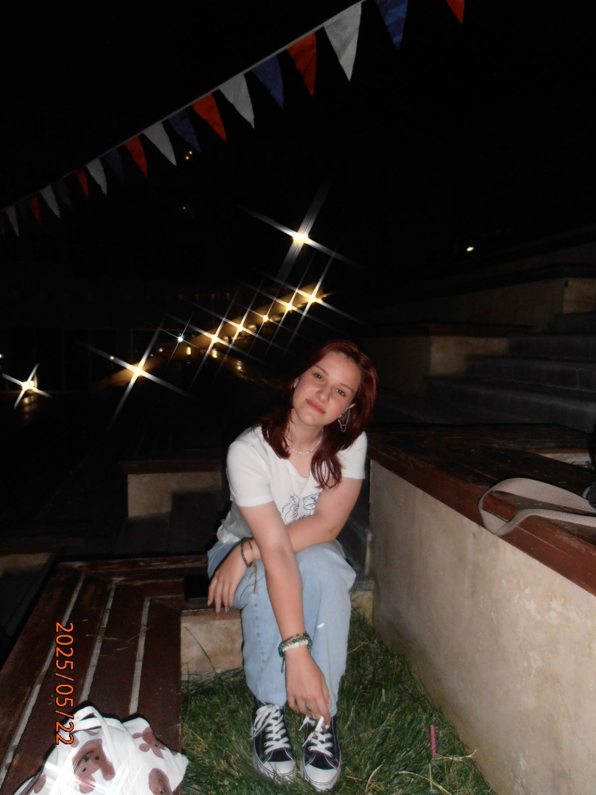
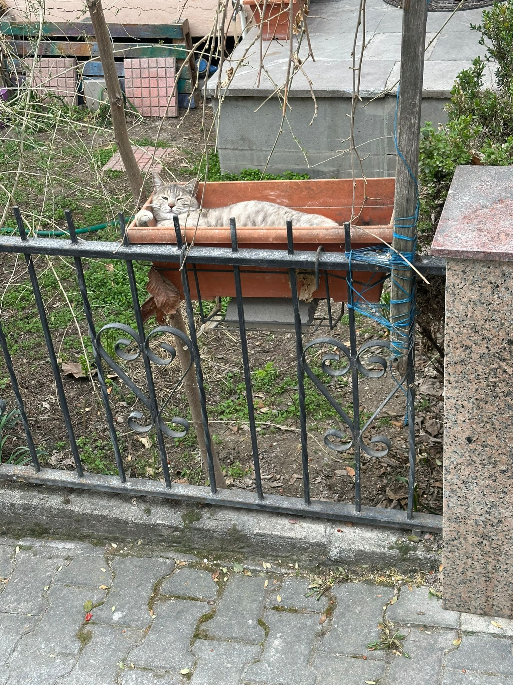
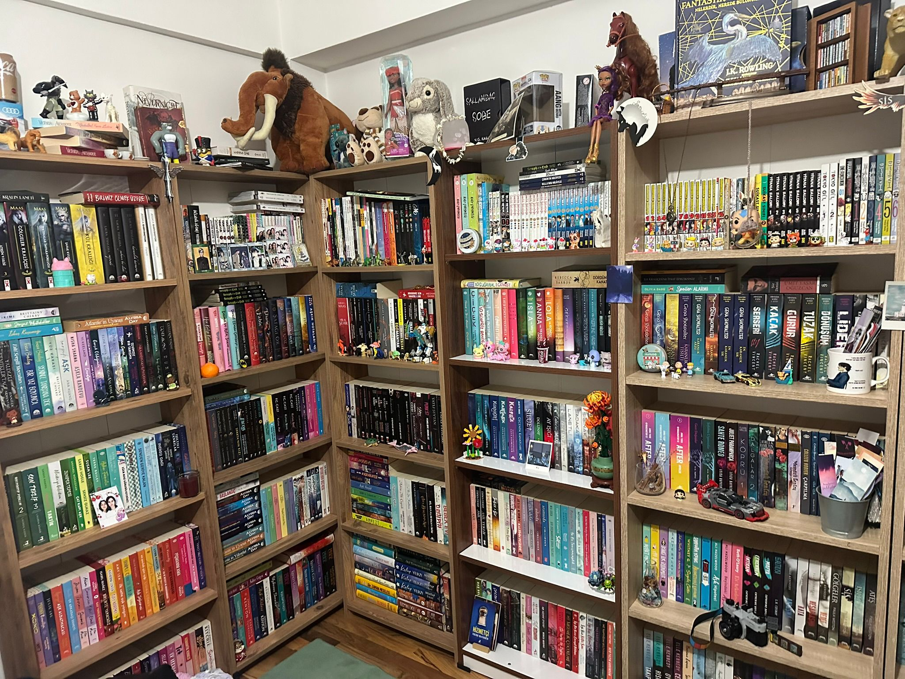

Merhaba... Ben hayallerini mürekkebe, suskunluklarını satırlara döken bir sonbahar çocuğuyum. Kelimelerin yankısına, eski bir şarkının kalpte bıraktığı izlere, ve bazen sadece bir fincan kahvenin getirdiği ilhama inanırım. Bu blog; biraz ben, biraz düşlerim, biraz da ruhumun kıyısına çarpan hayallerle örülü.
Günlüklerimi burada tutuyorum; çünkü bazı cümleler, bir günlüğün kilidinden daha derin sırlar saklar. Kedilerimle geçen sessiz akşamlar, kulağımda çalan nağmeler, içimde yankılanan sahneler ve satır aralarında kaybolduğum kitaplarla örülü bu köşe… Belki sen de burada bir satırda, bir tınıda, bir bakışta kendinden bir iz bulursun.



Gönderilen şiirler anonim olarak kaydedilir...